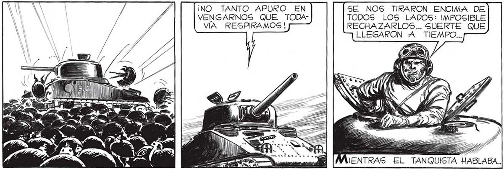
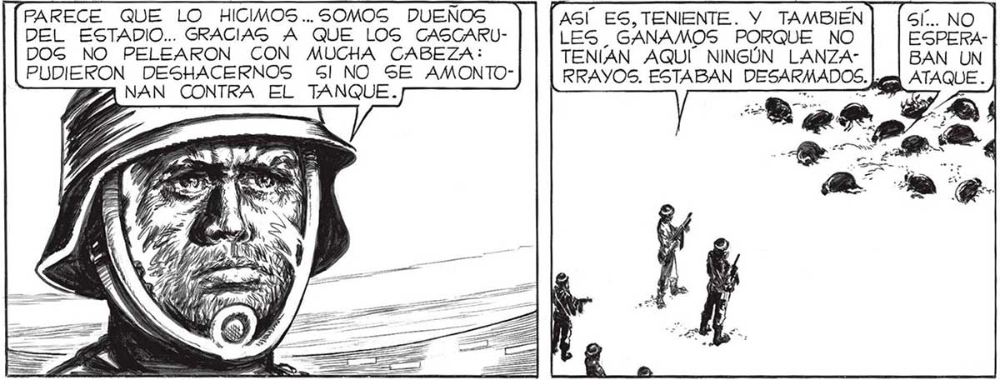
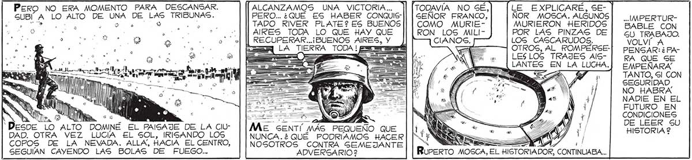

¡NO TANTO APURO EN SE NOS TIRARON ENCIMA DE VENGARNOS QUE TODA- TODOS LOS LADOS: IMPOSIBLE VIA RESPIRAMOS ! RECHAZARLOS... SUERTE QUE LLEGARON A TIEMPO... o == e 1) / 70) == SÁ = _S ML ..RECORRÍ CON LA MIRADA LAS ENORMES zz TRIBUNAS: DE CUALQUIER LUGAR PODIA LLEGAR UN NUEVO ATAQUE. PERO NO, NABLABA.. DA SE MOVÍA EN LAS GRADERIASG PARECE QUE LO HICIMOS... SOMOS DUENOS ASÍ ES, TENIENTE. Y TAMBIÉN DEL ESTADIO... GRACIAS A QUE LOGS CASCARU- LES GANAMOS PORQUE NO DOG NO PELEARON CON MUCHA CABEZA: TENIAN AQUÍ” NINGÚN LANZAPUDIERON DESHACERNOS Sl NO SE AMONTONAN CONTRA EL TANQUE. PERO YA EL MAYOR, FAVALLI Y LOS ' OTROS ANALIZARAN LO OCURRIDO.VAYA USTED, SOSA, Y AVISE AL MAYOR QUE EL ESTADIO DE RIVER PLATE PARTIO AL TROTE EL EMISARIO YO SENTÍ UNAS GANAS ENORMES DE TIRARME EN EL SUELO, EN AQUEL PASTO Y QUE HABÍA SIDO A ESCENARIO DE TANTA JORNADA Í MEMORABLE Y ÑJ QUE AHORA ESTABA MUERTO, | QUEMADO POR LA INACABABLE NEVADA. Pero NO ERA MOMENTO PARA DESCANSAR. ALCANZAMOS UNA VICTORIA... TODAVIA NO SE, LE EXPLICARE, SESUBI A LO ALTO DE UNA DE LAS TRIBUNAS. PERO... ¿QUÉ ES HABER CONQUIS-|| | SEÑOR FRANCO, NOR_ MOSCA. ALGUNOS | IMPERTURE Doo 0 5 TADO RIVER PLATE? ES BUENOS || | COMO MURIE- MURIERON HERIDOS | BABLE CON Je o «| |PAIRES TODA LO QUE HAY QUE RON LOS MILI- POR LAS PINZAS DE| cu TRABAJO. a RECUPERAR...¡BUENOS AIRES, Y )] CIANOS. LOS CASCARUDOS. VOLVÍ A : 3 LA TIERRA TODA! peral - OTROS, AL _ROMPERSE-] PENSAR: ¿PA== <= E LESLOG TRAJES AIS- RA QUE SE LANTES EN LA LUCHA.] EMPEÑARA 3 TANTO, Sl CON AN SEGURIDAD | NO HABRA NADIE EN EL 3 . | ( JPA h == L y FUTURO EN a lg A EPA E PA | y CONDICIONES 'Desoe LO ALTO DOMINÉ EL PAISAJE DE LA CIU" Si o A NY A! 2 DAD. OTRA VEZ LUCIA EL SOL, IRISANDO LOS A A Y : COPOS DE LA NEVADA. ALLA, HACIA EL CENTRO, | |NOGOTROS CONTRA GEMEJANTE LARES A SEGUIAN CAYENDO LAS BOLAS DE FUEGO... ADVERGARIO 2 RurerTO M


